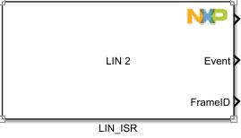
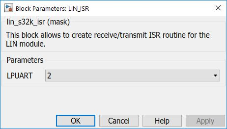

LIN Callback Block
This block allows the user to trigger a subsystem when LIN events are raised.
Block Image
Inputs:
- None.
Outputs:
- Trigger - calls a subsystem when a LIN event is raised. Inside this subsystem, a trigger port with function-call trigger type is needed.
- Event - event id that can be passed to the subsystem triggered by this block. This value can be used to handle different LIN events. The event list is as follows:
- LIN_NO_EVENT = 0x00U - No event yet
- LIN_WAKEUP_SIGNAL = 0x01U - Received a wakeup signal
- LIN_BAUDRATE_ADJUSTED = 0x02U - Indicate that baudrate was adjusted to Master's baudrate
- LIN_RECV_BREAK_FIELD_OK = 0x03U - Indicate that correct Break Field was received
- LIN_SYNC_OK = 0x04U - Sync byte is correct
- LIN_SYNC_ERROR = 0x05U - Sync byte is incorrect
- LIN_PID_OK = 0x06U - PID correct
- LIN_PID_ERROR = 0x07U - PID incorrect
- LIN_FRAME_ERROR = 0x08U - Framing Error
- LIN_READBACK_ERROR = 0x09U - Readback data is incorrect
- LIN_CHECKSUM_ERROR = 0x0AU - Checksum byte is incorrect
- LIN_TX_COMPLETED = 0x0BU - Sending data completed
- LIN_RX_COMPLETED = 0x0CU - Receiving data completed
- LIN_RX_OVERRUN = 0x0DU - RX overrun flag
- Frame ID - the ID of the frame (PID got from header)
Parameters and Dialog Box
LIN
Selects which LIN (LPUART) module to use.
Block Dependency
- Use LIN_Config Block to configure LIN.
Block Miscellaneous Details:
- None